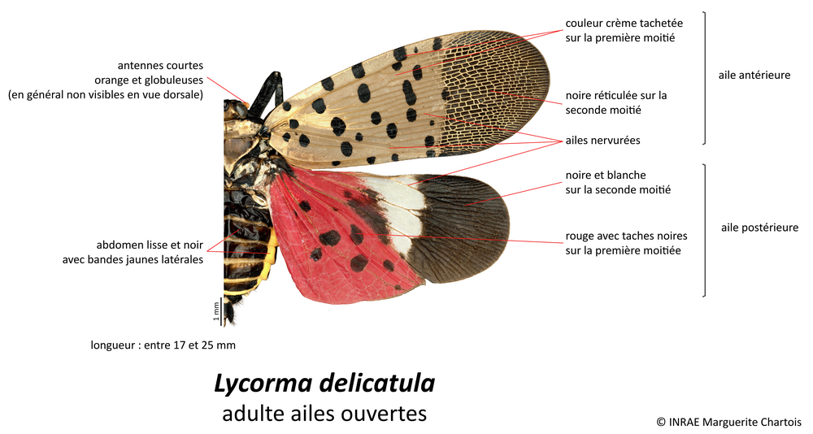
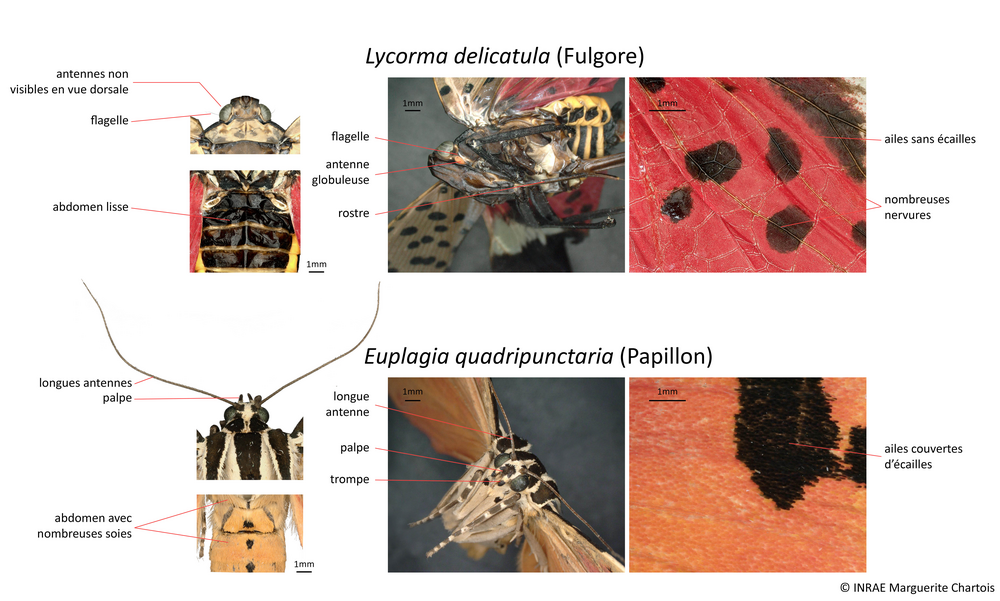
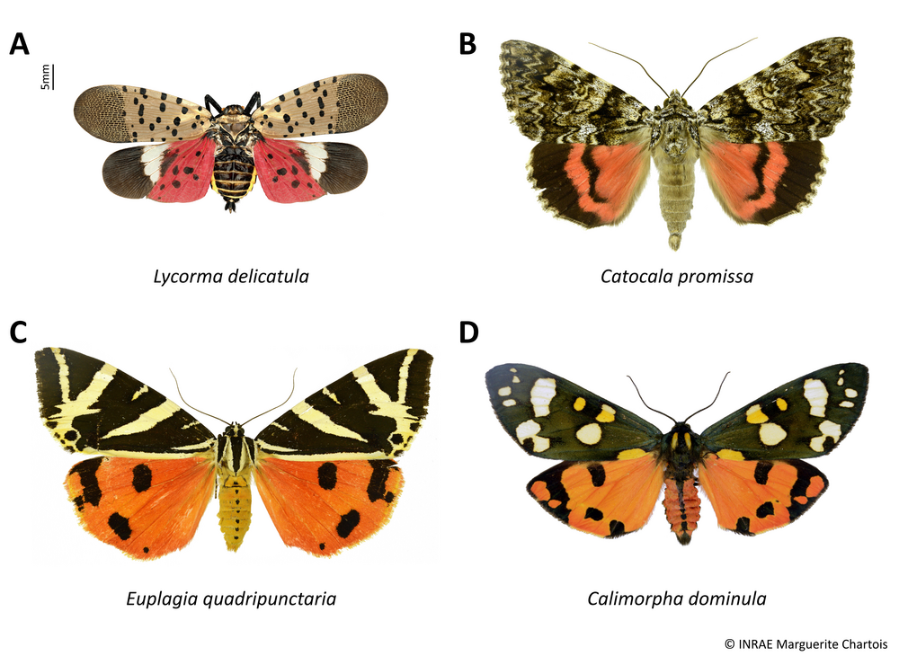
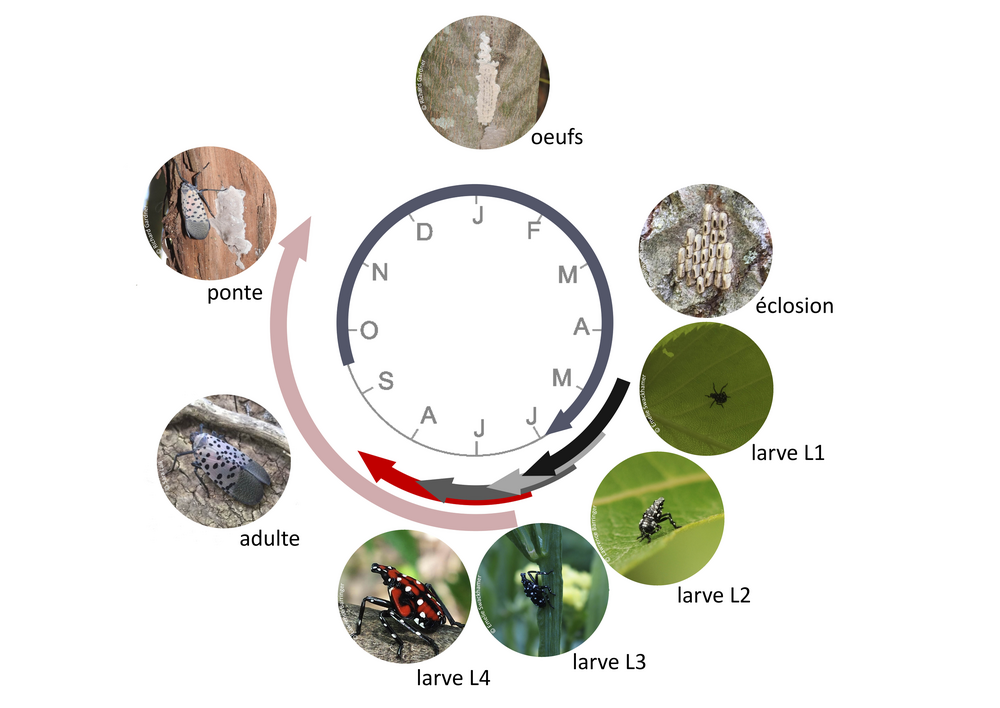
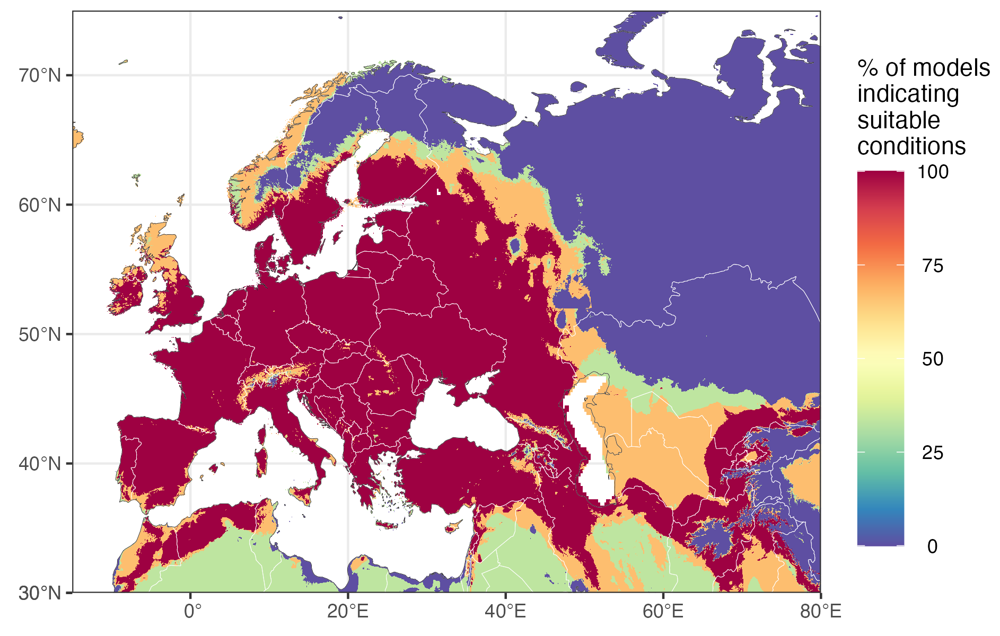
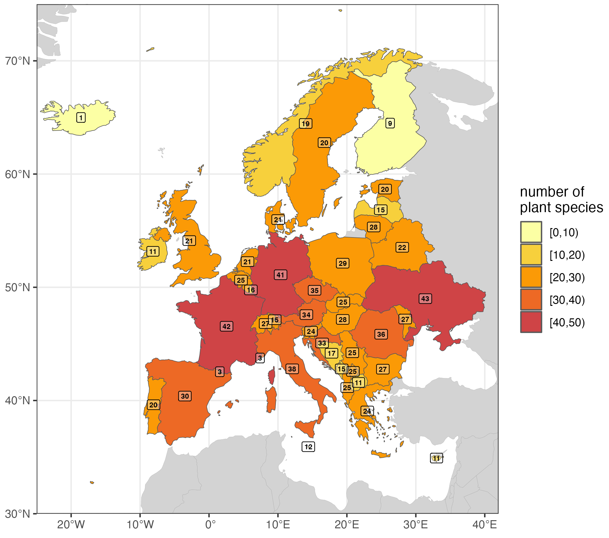

Lycorma delicatula (White, 1845) - Le fulgore tacheté
Présentation de l’espèce
⚠️ La présentation du fulgore tacheté ci-dessous est inspirée de la fiche descriptive que nous avons préparée pour l’application Agiir (https://ephytia.inrae.fr/fr/C/27321/Agiir-Le-fulgore-tachete).
Critères de reconnaissance du fulgore tacheté
Le fulgore tacheté, Lycorma delicatula (White, 1845), est un Hémiptère : son appareil buccal est de type piqueur (trompe appelée rostre repliée sous le corps). Il possède deux paires d’ailes non couvertes d’écailles qu’il replie en toit sur son dos au repos. Le fulgore tacheté appartient à la famille des Fulgoridae, ses ailes postérieures et antérieures présentent de très nombreuses nervures transversales réticulées.


Il n’existe actuellement aucune espèce appartenant à la famille des Fulgoridae en Europe, par conséquent L. delicatula a une forme très singulière qu’il est facile de reconnaître. En Europe, seules certaines espèces de papillons possédant des ailes avec des couleurs similaires pourraient être confondus avec le fulgore tacheté.
La planche ci-dessous regroupe quelques espèces de papillons pouvant éventuellement être confondus avec le fulgore tacheté, mais comme chez tous les papillons, leurs ailes sont entièrement recouvertes d’écailles, les antennes sont visibles de dessus et leur trompe est enroulée. Attention toutefois : au repos, le fulgore tacheté replie ses ailes en toit sur son dos et on ne voit plus ses ailes postérieures rouges. Néanmoins la coloration des ailes antérieures gris rosé avec des points noirs et les extrémités piquetées de noir est très caractéristique.

Le développement larvaire de L. delicatula comporte 4 stades, tous reconnaissables. Les larves de stades 1 à 3 sont noires à points blancs. Le dernier stade larvaire est noir avec des marques rouges et des points blancs. La forme de la tête est assez caractéristique, avec un prolongement en forme de coin en avant des yeux.
Les œufs sont pondus par groupe, formant une masse appelée oothèque. Ils sont recouverts d’une substance cireuse de couleur grise brunâtre, qui se craquelle en séchant. La forme des pontes est assez caractéristique : les œufs sont collés les uns aux autres sur leur longueur et alignés. Ces plaques d’œufs sont généralement pondues sur les troncs et les branches des arbres.
Cycle de développement
Le fulgore tacheté réalise une génération par an. La reproduction a lieu pendant l’été et la ponte entre septembre et fin novembre. La femelle pond plusieurs masses d’œufs regroupés en oothèque recouverte par une sécrétion cireuse grise brunâtre. Ceux-ci sont souvent pondus sur le tronc des arbres de l’espèce Ailanthus altissima, la plante hôte préférentielle de L. delicatula. Les œufs peuvent également être déposés sur une grande variété de supports : murs, palettes, briques, pierres ou n’importe quelle surface lisse d’au moins 2,5 cm de long. Cette capacité joue un rôle dans la dissémination rapide de l’espèce comme auto-stoppeur dans des marchandises commercialisées.
Le fulgore tacheté passe l’hiver au stade d’œuf. Les jeunes larves éclosent en mai, s’agglutinent sur les arbres pour se nourrir, de préférence sur les tiges puis en grandissant sur les troncs et les branches. Un comportement d’ascension et de chute cyclique des larves le long du tronc, selon les conditions météorologiques et l’heure de la journée a été observé. Les adultes émergent à partir de juillet et disparaissent début décembre. Ils volent peu et rarement plus de 3 mètres. Ils utilisent plutôt leurs ailes pour sauter afin d’échapper à leurs prédateurs. Leurs ailes antérieures brun clair leur permettent de se camoufler tandis qu’ils exhibent les couleurs vives de leurs ailes antérieures en cas de danger.

Plantes hôtes et dégâts
Les larves et les adultes se nourrissent de la sève des tiges et des feuilles, et en cas de forte infestations, cela peut provoquer des blessures et une réduction de la croissance ou la mort de la plante. Le miellat excrété par les fulgores (parfois en grande quantité) ruisselle sur les feuilles et favorise le développement de moisissures noires (fumagine) qui bloque la photosynthèse et peut attirer d’autres insectes tels que des guêpes, des frelons, des abeilles et des fourmis. On peut alors remarquer une odeur de fermentation. Chez la vigne, les infestations conduisent à la production de pousses ne générant pas de fruits, une réduction de la robustesse du plant, des dommages au niveau des bourgeons ou des tissus vasculaires, voire la mort du pied l’année suivante.
L. delicatula montre une préférence alimentaire pour les plantes produisant des métabolites secondaires toxiques. Consommer la sève de ces plantes représente un moyen de défense pour l’insecte. Ces molécules provoquent l’apparition de la couleur rouge sur les ailes postérieures ce qui est un signal indiquant aux prédateurs que le fulgore est toxique. L’hôte préférentiel du fulgore est l’arbre du paradis, Ailanthus altissima, originaire d’Asie mais répandu partout dans le monde. Toutefois, le fulgore tacheté est extrêmement polyphage et sa gamme d’hôtes est très large, allant des herbacées aux ligneux. Il a été observé s’alimenter sur plus de 100 espèces de plantes sauvages, ornementales et cultivées, les pommiers, cerisiers, vignes, peupliers, érables, bouleaux. Les plantes présentant une forte concentration en galactose et en fructose, comme les arbres fruitiers et la vigne, sont attractives pour le fulgore.
Historique de l’invasion
Le fulgore tacheté est originaire de Chine. Il a envahi la Corée du Sud où il a été officiellement détecté pour la première fois en 2004. Il a ensuite été accidentellement introduit en Pennsylvanie (USA) en 2014. Malgré les mesures de quarantaine et les efforts d’éradication, L. delicatula s’est ensuite rapidement propagé dans plusieurs États : Pennsylvanie et Delaware en 2017 puis New Jersey, New York et Virginie en 2018, Delaware, Maryland, Virginie, Virginie-Occidentale, Connecticut, Ohio en 2020. Des interceptions ont été réalisées dans les États du Maine, Massachusetts et Oregon. En 2021 le fulgore a été observé dans l’Indiana, Rhode Island, Vermont, Kansas et en 2022 en Caroline du Nord et Michigan. Il n’a pas encore été détecté en Europe.
Quel risque d’établissement en Europe ?
Lycorma delicatula est originaire du sud de la Chine et a colonisé la Corée du Sud, le Japon et les États-Unis, où son aire de répartition continue de s’étendre. L. delicatula est à ce jour absent d’Europe.
Nous avons étudié deux facteurs écologiques clés susceptibles d’influencer son risque d’établissement : la favorabilité du climat et la disponibilité de plantes hôtes (Chartois et al., 2025). Nous avons développé plusieurs modèles d’aire de distribution afin de déterminer dans quelle mesure le climat actuel de l’Europe permettrait l’établissement de L. delicatula. Il ressort de ce travail que les conditions climatique de l’Europe sont très favorable au fulgore tacheté comme le montre la carte ci-dessous.

La carte montrant la proportion de modèles indiquant la présence de conditions climatiques favorables. Les zones en rouge sont considérées comme favorables par tous les modèles que nous avons utilisés. D’après Chartois et al. 2025.
Les conditions climatiques resteront très favorables dans le futur, quels que soient les scénarios de changement climatique considérés (voir Chartois et al. 2025). Mais le climat n’est certainement pas le seul facteur affectant le risque de voir une espèce exotique s’établir hors de son aire de distribution. Dans le cas des insectes phytophages, la présence de plantes hôtes consommables est crucial. Une revue de la littérature nous a permis d’identifier le spectre de plantes hôtes de l’espèce et de recenser celles présentes sur le territoire européen. Il apparaît que de nombreuses plantes hôtes consommées par L. delicatula sont déjà largement répandues en Europe.

Nombre de plantes hôtes dans les pays européens où les conditions climatiques sont favorables à Lycorma delicatula. D’après Chartois et al. 2025.
Il semble clair que ni les conditions climatiques ni la disponibilité des plantes hôtes ne constituent des obstacles à l’établissement de L. delicatula en Europe. Les données relatives à la favorabilité du climat présent et futur ainsi que la liste des espèces hôtes potentielles peuvent ainsi guider efficacement les efforts de surveillance et renforcer la préparation des autorités phytosanitaires.
Référence
- Chartois, M., Fried, G., Rossi, J.-P., 2025. Climate and host plant availability are favourable to the establishment of Lycorma delicatula in Europe. Agricultural and Forest Entomology 27, 316–328.
Jean-Pierre Rossi, Jean-Claude Streito & Marguerite Chartois, 30 April, 2025